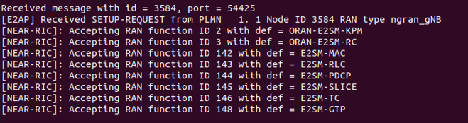
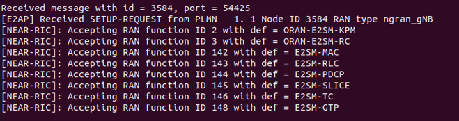

Day 2 - OAI/FlexRIC Tutorial
Table of Contents
Prerequisites
Install Dependencies
sudo apt install git vim tree net-tools libsctp-dev python3.8 cmake-curses-gui libpcre2-dev python-dev build-essential cmake libfftw3-dev libmbedtls-dev libboost-program-options-dev libconfig++-dev libtool autoconf python3-pip curl bison flex iperf
Install Swig 4.1
git clone https://github.com/swig/swig.git
cd swig
git checkout release-4.1
./autogen.sh
./configure --prefix=/usr/
make -j8
sudo make install
Check GCC Version (gcc-10, gcc-12, or gcc-13)
gcc --version
Warning
If you see that you have gcc 11, follow the steps given here to switch to a different version
Install Docker Compose
sudo apt install -y putty ca-certificates gnupg
sudo install -m 0755 -d /etc/apt/keyrings
curl -fsSL https://download.docker.com/linux/ubuntu/gpg | sudo gpg --dearmor -o /etc/apt/keyrings/docker.gpg
sudo chmod a+r /etc/apt/keyrings/docker.gpg
echo "deb [arch="$(dpkg --print-architecture)" signed-by=/etc/apt/keyrings/docker.gpg] https://download.docker.com/linux/ubuntu "$(. /etc/os-release && echo "$VERSION_CODENAME")" stable" | sudo tee /etc/apt/sources.list.d/docker.list > /dev/null
sudo apt-get update
sudo apt install -y docker-buildx-plugin docker-compose-plugin
Check docker compose version. The installed version should be v2.29.
sudo docker compose --version
Note
Optional Step: If you do not want to use sudo while executing docker compose commands, run sudo usermod -a -G docker $(whoami) and reboot the machine.
Setup
Setup OAI 5G Core Network
In this demo, we will employ the Core Network solution provided by Open Air Interface. This solution deploys network functions as docker containers. The CN components can be customized according to experimental requirements by modifying the configuration files. However, for the purposes of this tutorial we retain the default functionality.
Get Core Network Configuration files and docker images
wget -O ~/oai-cn5g.zip https://gitlab.eurecom.fr/oai/openairinterface5g/-/archive/develop/openairinterface5g-develop.zip?path=doc/tutorial_resources/oai-cn5g
unzip ~/oai-cn5g.zip
mv ~/openairinterface5g-develop-doc-tutorial_resources-oai-cn5g/doc/tutorial_resources/oai-cn5g ~/oai-cn5g
rm -r ~/openairinterface5g-develop-doc-tutorial_resources-oai-cn5g ~/oai-cn5g.zip
cd ~/oai-cn5g
sudo docker compose pull
Test the deployment of Core Network
sudo docker compose up -d

Verify that all the 10 containers are deployed and healthy.
sudo docker ps -a

Turn the core network off.
sudo docker compose down
Setup OAI Radio Access Network and UE
Clone the OAI 5G RAN repository and checkout the oaic_workshop_2024_v1 branch.
git clone https://github.com/openaicellular/openairinterface5G.git ~/oai
cd ~/oai
git checkout oaic_workshop_2024_v1
cd ~/oai/cmake_targets/
./build_oai -I -w SIMU --gNB --nrUE --build-e2 --ninja
{kind=link}
Setup FlexRIC
Clone the OAI 5G RAN repository and checkout the beabdd07 commit.
git clone https://github.com/openaicellular/flexric.git ~/flexric
cd ~/flexric
git checkout beabdd07
Build the flexRIC module.
mkdir build
cd build
cmake ../
{kind=link}
make -j`nproc`
sudo make install
{kind=link}
Deploy 5G Network
Start the Core Network
In Terminal 1,
cd ~/oai-cn5g
sudo docker compose up –d
cd ~/
Check if the Core Network is up and running
sudo docker ps -a
Start the gNB
In Terminal 1,
cd ~/oai/cmake_targets/ran_build/build
sudo ./nr-softmodem -O ../../../targets/PROJECTS/GENERIC-NR-5GC/CONF/gnb.sa.band78.fr1.106PRB.usrpb210.conf --gNBs.[0].min_rxtxtime 6 --rfsim --sa
{kind=link}
Start the UE
In terminal 2,
cd ~/oai/cmake_targets/ran_build/build
sudo ./nr-uesoftmodem -r 106 --numerology 1 --band 78 -C 3619200000 --rfsim --sa --uicc0.imsi 001010000000001 --rfsimulator.serveraddr 127.0.0.1
Start the near-RT RIC
In terminal 3,
cd ~/
./flexric/build/examples/ric/nearRT-RIC
 

{kind=link}
Exchange traffic between Network and UE
Streaming Traffic using Ping
For uplink ping - UE to network
In terminal 4,
ping 192.168.70.135 -I oaitun_ue1
For Downlink ping - Network to UE
sudo docker exec -it oai-ext-dn ping <ue_ip>
Use ctrl+c or ctrl+d to stop/exit the ping processes.
Streaming Traffic with iPerf
Downlink iPerf
Find out the IP address of the UE by running ifconfig on the UE machine and check the IP address field of oaitun_ue1 network Interface. Here we initialize an iperf server for UDP traffic.
In terminal 4,
iperf -s -u -i 1 -B <ue_ip>
The below command generates UDP traffic for 100 seconds, at the rate of 10Mbps from the Core network. In terminal 5,
sudo docker exec -it oai-ext-dn iperf -u -t 100 -i 1 -fk -B 192.168.70.135 -b 10M -c <ue_ip>
Uplink iperf
On terminal 4, initialize the iperf server (metrics are printed every second) for TCP traffic run,
sudo docker exec -it oai-ext-dn iperf -s -i 1 -fk -B 192.168.70.135
In terminal 5, run
iperf -c 192.168.70.135 -i 1 -b 10M -B <ue_ip>
Run xApps
KPIMON xApp
First we will run the KPIMON xApp and observe some metrics. This xApp is based on the E2SM-KPM (Key Performance Metrics) service model. It is responsible for collecting metrics collected by the RAN and forwarding it to relevant xApps to help in RAN control.
Per O-RAN specifications, 5G measurements supported by KPM are specified in 3GPP TS 28.552. Some of the metrics supported are DRB.PdcpSduVolumeDL, DRB.PdcpSduVolumeUL, DRB.RlcSduDelayDl, DRB.UEThpDl, DRB.UEThpUl, RRU.PrbTotDl, RRU.PrbTotUl.
In this implementation Report Style 4 (Section 7.4.5) has been considered.
In a new Terminal, run
cd ~/flexric
./build/examples/xApp/c/monitor/xapp_kpm_moni
RAN Control (RC) xApp
This xApp enables control of RAN services exposed by the RAN. The current implementation exposes RAN control function QoS flow mapping configuration. This version of the xApp supports REPORT Service Style 4 (UE Information - section 7.4.5) - aperiodic subscription for UE RRC State Change and CONTROL Service Style 1 (“Radio Bearer Control” - section 7.6.2) - “QoS flow mapping configuration” (e.g creating a new DRB).
cd ~/flexric
./build/examples/xApp/c/kpm_rc/xapp_kpm_rc
Follow the instructions during the workshop to modify the RC xApp in order to issue a Control Command to the gNB to release a specified UE’s connection.